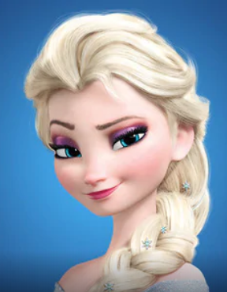
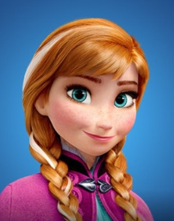
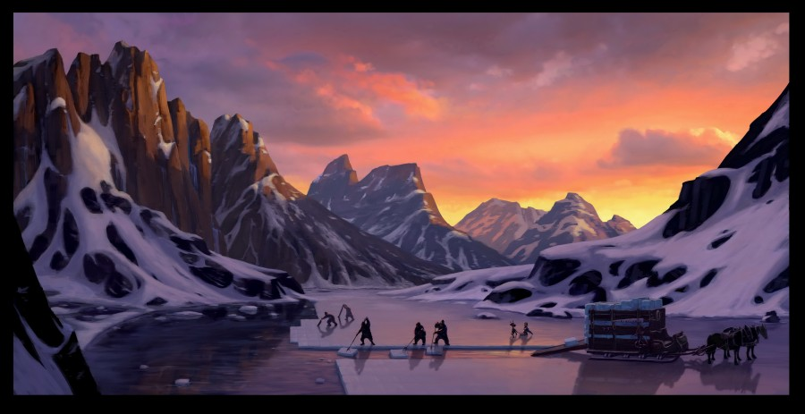
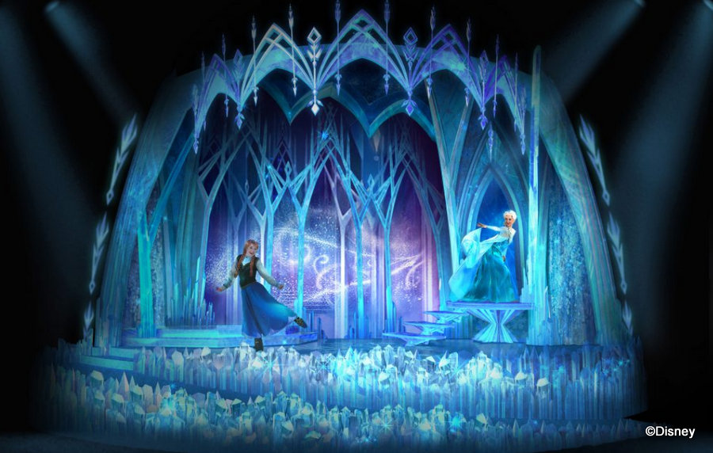
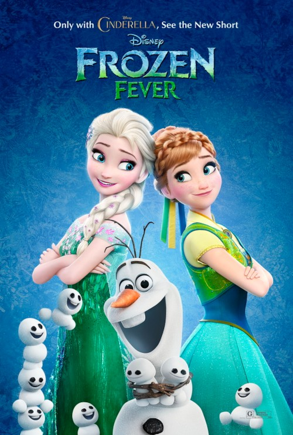
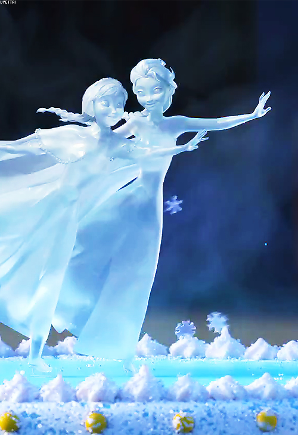
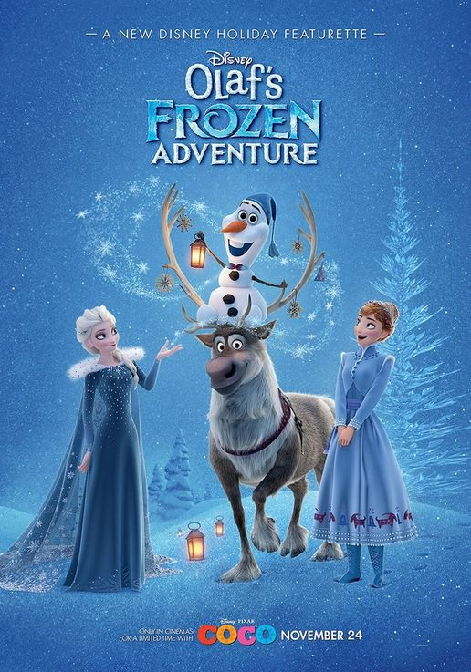

1. 줄거리
어렸을 때부터 마법의 힘을 가지고 태어난 아렌델 왕국의 공주 엘사는 동생 안나와 놀다 안나에게 해를 입히게 된다. 이 일로 엘사는 방 안에서 홀로 지내게 된다. 왕과 왕비가 갑작스럽게 세상을 떠나고, 어른이 된 엘사는 여왕에 즉위하게 되는데 즉위식에서 마법을 통제하지 못해 비밀을 들키게 되자 왕국을 떠나게 된다. 엘사의 마법으로 왕국이 겨울로 변하자 동생 안나는 엘사를 찾기 위해 얼음장수 크리스토프와 순록 스벤, 눈사람 올라프와 함께 모험을 떠나게 된다.
2. 등장인물
| 사진 | 이름 | 설명 |
|---|---|---|
|  | 엘사Elsa | 아렌델 왕가의 장녀이며 안나의 언니이다. |
|  | 안나Anna | 아렌델 왕의 차녀이자 엘사의 여동생으로, 밝고 긍정적인 성격이다. |
올라프Olaf | 아렌 델에서 가장 친근한 눈사람이다. 따뜻한 포옹을 좋아한다. |
|
크리스토프Kristoff | 설산에서 살며 얼음을 수확하여 아렌 델 왕국에 팔고있다. 순록 스벤과 절친한 친구 사이이다. |
|
스벤Sven | 크리스토프의 충성스러운 친구. 썰매를 끌고 있다. |
|
한스Hans | 엘사 대관식을 위해 아렌델에 오는 이웃 왕국의 잘 생긴 왕자이다. |
3. 배우
| 등장인물 | 한국 | 북미 |
|---|---|---|
| 엘사 | 박혜나 | 이디나 멘젤 |
| 안나 | 박지윤 | 크리스틴 벨 |
 |
||
| 올라프 | 이장원 | 조시 게드 |
| 크리스토프 | 정상윤 | 조나단 그로프 |
| 한스 | 최원형 | 산티노 폰타나 |
4. 사운드트랙
- Do You Want to Build a Snowman? Kristen Bell, Agatha Lee Monn, Katie Lopez
- For the First Time in Forever Kristen Bell, Agatha Lee Monn, Katie Lopez
- Love Is an Open Door Kristen Bell, Agatha Lee Monn, Katie Lopez
- Let It Go Kristen Bell, Agatha Lee Monn, Katie Lopez
- In Summer Kristen Bell, Agatha Lee Monn, Katie Lopez
- Fixer Upper Kristen Bell, Agatha Lee Monn, Katie Lopez
- Life's Too Short Kristen Bell, Agatha Lee Monn, Katie Lopez
5. 주요배경

얼음생산장
얼음을 수확하는 곳
아린델 성
엘사와 안나가 살고 있는 성아린델 뒷산
아린델 북쪽에 있는 산

엘사의 성
엘사가 마법으로 만든 성트롤의 숲
깊은 산 속 트롤들이 살고 있는 곳6. 후속작
- 겨울왕국 열기(Frozen Fever) 겨울왕국의 후속 단편 애니메이션이다. 신데렐라와 함께 상영되어 북미에서는 2015년 3월 13일, 국내에는 2015년 3월 19일에 개봉하였다. 7분 가량의 단편 애니메이션으로 겨울왕국 이후로 몇 달이 지난 뒤의 이야기를 담고 있다.  
- 올라프의 겨울왕국 어드벤처 엘사의 대관식 후 처음으로 맞이하는 명절 시즌을 배경으로, 너무나 오래 떨어져 있어 함께 명절을 지내지 못한 안나와 엘사를 위해 올라프가 명절의 진정한 의미를 찾아나선다는 내용이다.
- 겨울왕국2 2013년 개봉했던 겨울왕국의 정식 후속작으로 월트 디즈니 애니메이션 스튜디오의 58번째 장편 애니메이션이다.

겨울왕국 개봉 이후 6년만에 개봉되는 속편이다.
겨울왕국2 예고편
7. 수상 이력
수상 이력
- 제 71회 골든 글로브(Golden Globe) 최우수 애니메이션 상 -2014년 1월 12일
- 제5회 3D 영화 시상식 최고의 3D 영화상과 최고의 3D 애니메이션 상 -2014년 1월 28일
- 제 41회 애니 상(Annie Awards) 최우수 애니메이션 상 -2014년 2월 1일
- 제67회 영국 아카데미(BAFTA) 시상식 장편 애니메이션상 -2014년 2월 16일